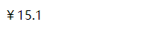
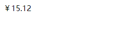

局部过滤器：
<html>
<head>
<title>vue</title>
<meta charset="utf-8">
</head>
<body>
<div id="app">
{{msg | toFixed(1)}}
<!-- msg是参数input的值，方法里的参数都是作为input后的参数 -->
</div>
</body>
<script src="node_modules\vue\dist\vue.js"></script>
<script>
let vm = new Vue({
el: "#app",
filters: {
// toFixed(input,param1,param2,param3)
toFixed(input, num) { //第二个参数为小数点个数
return '￥' + input.toFixed(num);
}
},
data:{
msg:15.123
}
});
</script>
</html>

全局过滤器（记得放在所有实例之前）
<html>
<head>
<title>vue</title>
<meta charset="utf-8">
</head>
<body>
<div id="app">
{{msg | my(2)}}
<!-- msg是参数input的值，方法里的参数都是作为input后的参数 -->
</div>
</body>
<script src="node_modules\vue\dist\vue.js"></script>
<script>
// 全局过滤
// Vue.filter(name,function)
Vue.filter('my',(input,num)=>{
return '￥' + input.toFixed(num);
})
// 局部过滤
let vm = new Vue({
el: "#app",
filters: {
// toFixed(input,param1,param2,param3)
toFixed(input, num) { //第二个参数为小数点个数
return '￥' + input.toFixed(num);
}
},
data:{
msg:15.123
}
});
</script>
</html>
//ps:过滤器经常使用，要好好掌握